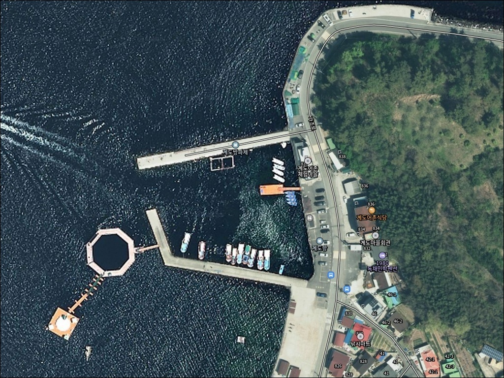
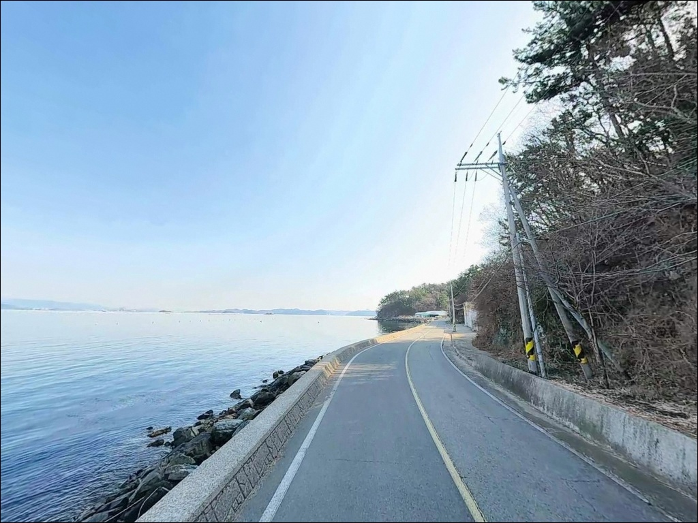
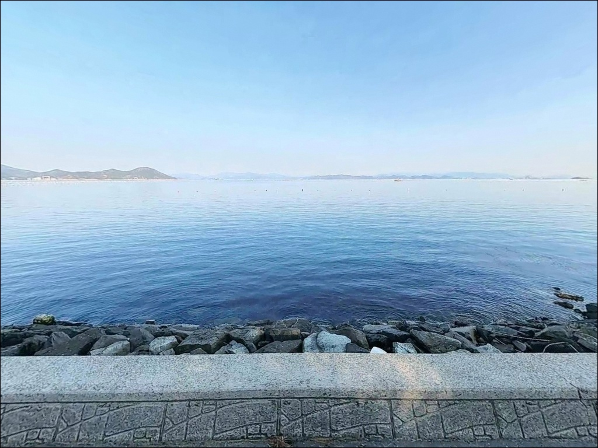
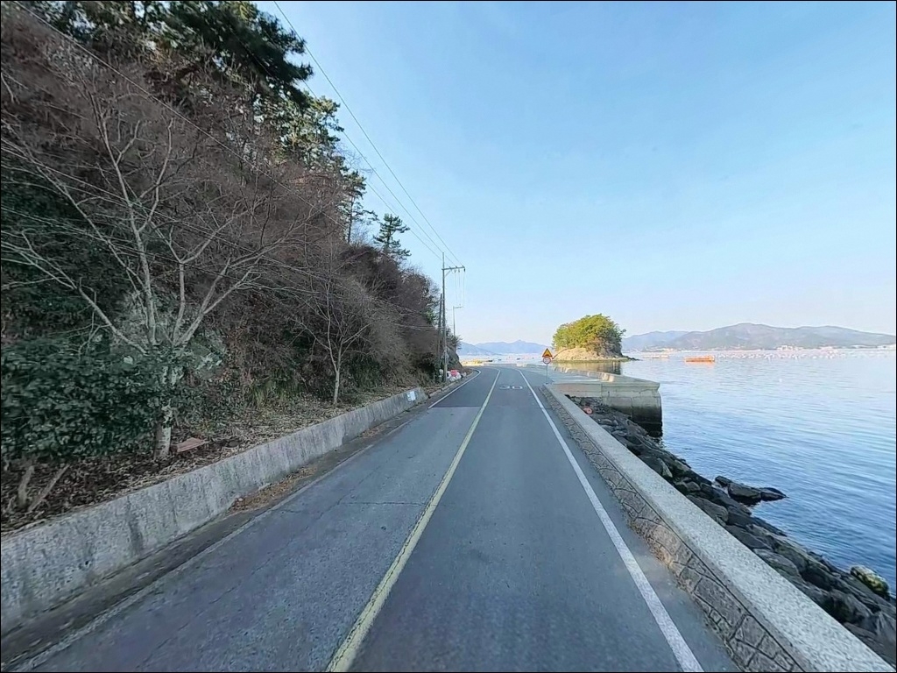
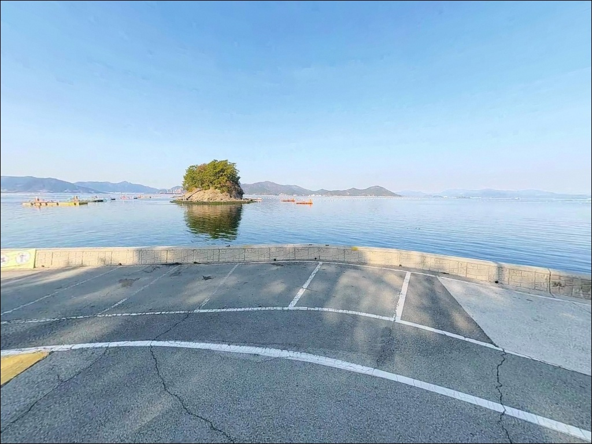
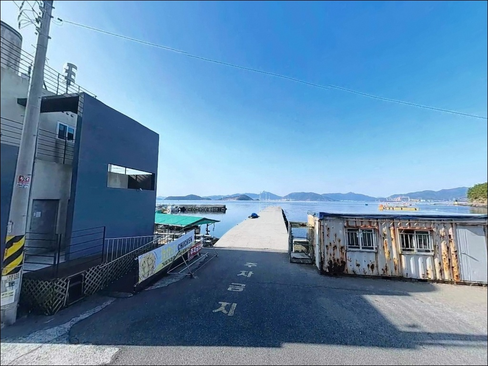
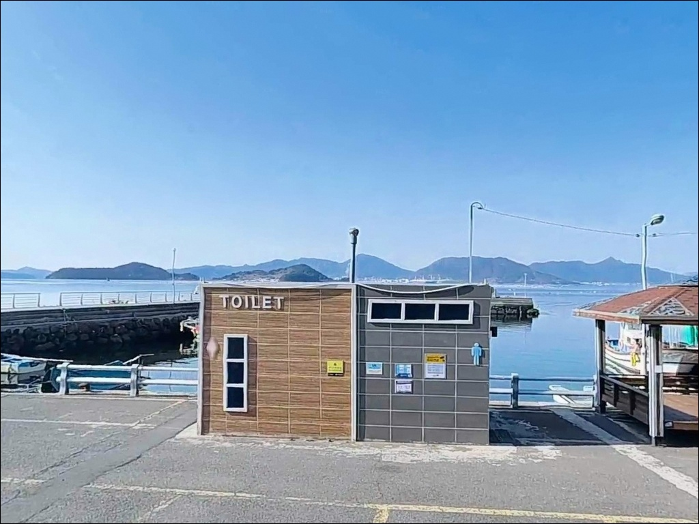
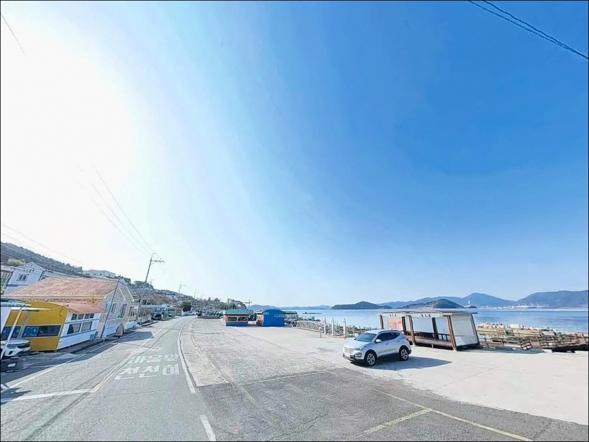
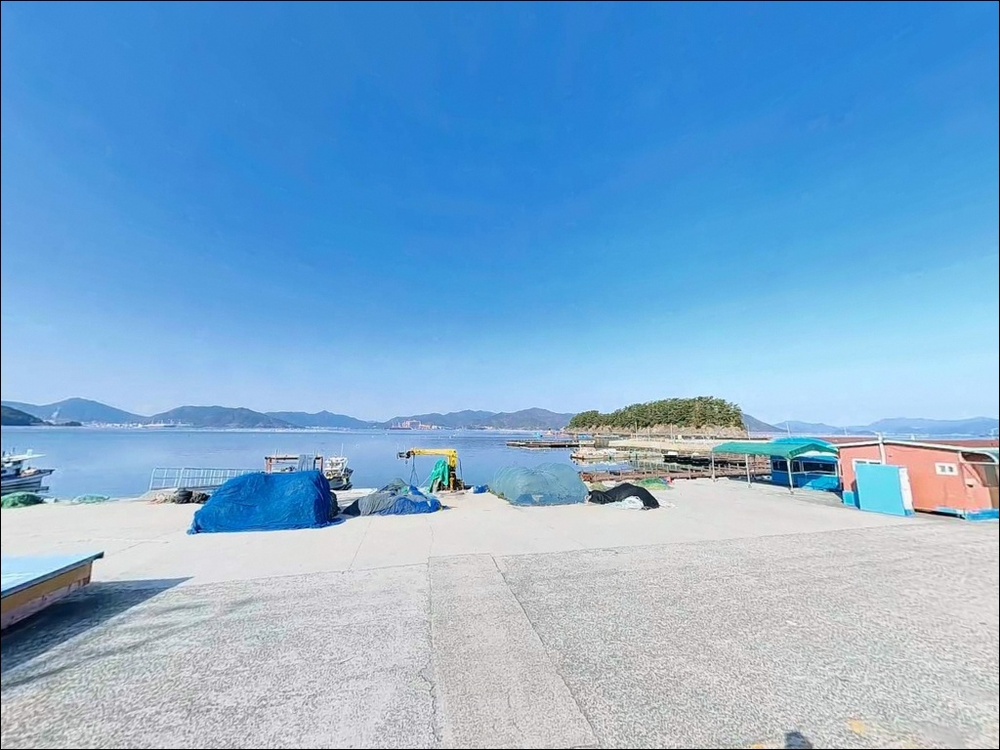

정조에는 멈추고 조류 흐를 때, 닭섬 방향 원투에 반응한 가조도 계도항 갑오징어 입질
이 페이지에는 광고(제휴 링크 포함)가 있으며, 광고 링크를 통해 구매하면 운영자가 판매 수익 또는 수수료를 받을 수 있습니다. 포인트 사진: 카카오맵 스카이뷰·로드뷰. 이 페이지의 지도·사진 이미지는 카카오맵의 실제 서비스 이미지와 다를 수 있습니다.


포인트 안내
계도항(계도선착장)
경남 거제시 사등면 창호리 1070-24
계도마을 해안도로에서 닭섬 방향으로
채비를 날리려면
조류가 흐르는 타이밍을 먼저 잡아야 합니다.
조류가 멈추는 정조 구간에는
어떤 채비를 써도 입질이 거의 사라지는
조류 의존도가 높은 포인트입니다.
가조도 서북쪽 끝단,
가조연륙교를 건너 섬 한 바퀴를 돌아야 닿는
계도항(계도선착장)은
2003년 지정된 어촌정주어항입니다.
방파제와 물양장, 어촌체험마을이 함께 자리하며
갑오징어·도다리·볼락을
복수 방식으로 공략할 수 있는 구조를 갖추고 있습니다.
이 글은 계도항(계도선착장)의
진입 동선, 차박 여건, 낚시 스타일별 공략 기준에 집중합니다.
조황 단정이나 특정 어종 보장은
이 글의 범위에 포함되지 않습니다.

1. 진입 동선과 포인트 접근성
계도마을 진입은 가조연륙교(680m, 왕복 2차선)를 통해 이루어집니다.
거제도 본섬 성포리에서 출발해
연륙교를 건넌 뒤
가조도 내부 포장도로를 따라
섬 서북단 끝까지 이동하는 구조입니다.
통영IC 방면에서는 신거제대교 → 사등면 성포항 → 연륙교 순서로,
거가대교 방면에서는 장목 → 고현 → 사등면 순서로
접근하면 됩니다.
가조도 진입 후 도로는
캠핑카·카라반 수준의 대형 차량도
이동이 가능한 왕복 2차선 포장도로로 이어집니다.
계도마을은 섬 안쪽 마을들을 모두 지난 뒤
가장 마지막에 도달하는 구조이므로
내비게이션 설정을 사전에 확인하고 출발하는 것이 좋습니다.
항 내부 진입 즉시 나오는 물양장 공터,
계도마을 해안도로 갓길,
어촌체험마을 주차 공간으로
차량 분산 주차가 가능합니다.
물양장 구역은 어선 하역 시간대에 주의가 필요하며,
선착장 내부에서 회차가 자유로운 편입니다.

2. 차박 환경과 야간 체류 여건
계도항(계도선착장)의 차박 여건은
가조도 전체 포인트 중 가장 안정적인 축에 속합니다.
어촌체험마을 주차 공간이 넓게 확보되어 있고,
낚시 포인트와 주차 공간 간 동선이 짧아
장비 이동 부담이 적은 구조입니다.
야간 환경은 항 내부와 체험마을 주변에
최소한의 조명이 갖춰져 있습니다.
계도마을 해안도로 구간은 가로등이 없어
야간 낚시 시 헤드랜턴과 집어등이 반드시 필요합니다.
특히 야간 무늬오징어 에깅을 병행할 경우
집어등 준비가 조과 여부를 가르는 조건이 됩니다.
차량 통행은 매우 드물고
민가와 해안도로 낚시 포인트가 분리된 구조라
야간 프라이버시는 양호한 편입니다.
서풍이 강해지는 날에는
닭섬 방향에서 직접 바람 영향을 받으므로
출발 전 바람 예보를 확인하고
서풍 강할 때는 방파제 내항 쪽으로 자리를 옮기는
대응이 필요합니다.


3. 주변 편의시설 및 인프라 현황
계도어촌체험마을은 해상콘도 4동,
낚시데크, 노배낚시, 해수풀장 등
체험형 시설을 운영하고 있습니다.
마을 내 공중화장실이 갖춰져 있어
기본 위생 여건은 충족됩니다.
그러나 가조도 내에는
편의점이나 대형 마트가 없습니다.
가조연륙교를 건넌 뒤
성포항 일대에서 편의점과 식당 이용이 가능하며,
차로 15분 거리의 사등면 소재지에
대형 마트가 위치합니다.
식수·얼음·낚시 소품은 본섬에서 출발 전에 보급하고 가는 것이 현실적인 준비 방식입니다.
응급 상황 발생 시
거제시 고현동 병원까지 연륙교를 건너
차량 약 15분 거리입니다.
가조도 내에는 의료 기관이 없으므로
비상약품과 구급용품을 출발 전에
반드시 챙겨야 합니다.

4. 방문 전 확인해야 할 준비사항
계도항(계도선착장)은 두 개의 방파제가 구분되어 운영됩니다.
어촌체험마을 해상좌대와 연결된
큰 방파제는 입어료 1만 원이 발생하며,
그 바깥쪽 소형 방파제는 무료 출입이 가능합니다.
일반 낚시인이 진입하는 주요 포인트는
소형 방파제와 계도마을 해안도로입니다.
조류 타이밍 판단이 이 포인트의 핵심입니다.
가조도 주변 조류는 0.5~0.9kn 수준으로
크게 빠르지는 않지만,
정조 구간에는 입질이 거의 없어지는 특성이 강합니다.
바다타임에서 가조도 기준 물때를 확인하고
조류가 흐르는 들물 또는 날물 타이밍에
맞춰 입장 시각을 결정하는 것이 기본입니다.
계도마을 해안도로에서 갑오징어 에깅 시
가까운 곳에서는 입질이 거의 없고
최대한 원투해야 한다는 점을 미리 파악해 두는 것이 좋습니다.
10호 내외 싱커에 수평에기를 달아
닭섬 방향으로 멀리 날리는 방식이 이 포인트의 기본 운용입니다.
어장줄로 인한 밑걸림 가능성이 있으므로
여분 채비를 넉넉히 준비하는 편이 좋습니다.

5. 지형 기반 낚시 여건 분석
계도항(계도선착장)은 가조도 서북쪽 끝단에 위치하며
항 정면으로 닭섬(계도)이 자리합니다.
이 닭섬을 향해 서쪽으로 열린 내만 구조로,
외해 파도 영향은 제한적인 편입니다.
방파제는 큰 방파제와 소형 방파제 두 구조로 나뉘며,
소형 방파제는 석축 형태로
발판이 비교적 안정적인 편입니다.
수심은 전반적으로 얕은 내만 구조로
1.2~2.7m 수준의 수심대를 형성합니다.
바닥은 주로 펄에 여가 섞인 형태로,
도다리 계열 어종이 자리를 잡기 좋은 구조입니다.
방파제 끝단 쪽에서 수심이 다소 깊어지며
조류가 흐르는 구간에 포인트가 형성됩니다.
계도항(계도선착장)에서 도보 5분 거리의
계도마을 해안도로는 닭섬을 바라보며
오픈 연안 구조로 멀리 캐스팅이 가능합니다.
이 해안도로 구간이 가조도 전역에서
가장 유명한 갑오징어 포인트로 알려져 있으며,
봄과 가을 에깅 시즌에 낚시인이 집중되는 구간입니다.
출조 전에 가조도 일대 최신 조황을
반드시 검색해 보시기 바랍니다.


6. 조류가 흐를 때 달라지는 계도항 낚시 공략법
갑오징어 에깅이 이 포인트의 주력 방식입니다.
계도마을 해안도로에서 10호 내외 싱커에
수평에기(스테)를 달아 닭섬 방향으로 원투하는 것이
기본 운용입니다.
조류가 흐르는 들물 또는 날물 타이밍에 입질이 살아나며,
조류가 멈추면 포인트를 이동하는 방식이
이 구간에서 효율적입니다.
봄 산란기와 가을이 갑오징어 시즌의 핵심 구간입니다.
원투낚시도 이 포인트와 잘 맞는 방식입니다.
펄·여 혼합 바닥 구조는 도다리 계열 어종이
머물기 좋은 조건을 갖추고 있으며,
바다타임 기준으로 초들물~중날물 타이밍에
방파제 정면 방향으로 채비를 날리는 것이 기본입니다.
밑걸림이 상대적으로 적은 편이라
초행 낚시인도 접근하기 좋은 구조입니다.
볼락 라이트게임은 야간에 소형 방파제와
항 주변 테트라포트 근처를 천천히 이동하며
마릿수를 노리는 방식이 유효합니다.
릴찌낚시나 민장대 채비로는
소형 방파제 외항에서 중들물 이후
조류가 흐르는 타이밍에 닭섬 방향으로 흘리는 운용이 어울립니다.
어장줄로 인한 밑걸림에 주의하며 운용해야 합니다.

7. 대안 포인트와 플랜 B 동선
계도항(계도선착장)에서 조류가 약하거나
주차 여건이 여의치 않을 때
첫 번째 대안은 창촌마을 방파제입니다.
계도항(계도선착장)에서 약 1km 거리로
동일 가조도 내에 위치해 해역 조건이 거의 같습니다.
릴찌낚시와 에깅을 동일하게 적용할 수 있으며,
규모가 크고 조용한 낚시 환경을 갖추고 있습니다.
조류가 빠른 구간을 원한다면
가조도선착장 방파제(약 4.3km)가 대안입니다.
가조연륙교 북단에 자리해
연륙교 조류 영향으로 수심이 깊고 조류가 빠른 편입니다.
에깅, 농어 루어, 감성돔 찌낚시 등
계도항(계도선착장)과 낚시 방식이 달라
하루 동선으로 함께 묶어 탐색하기 좋습니다.
성포항은 가조연륙교를 건너 즉시 닿는 거제 본섬 포인트입니다.
편의점·식당 접근성이 계도항(계도선착장)보다 높아
장박 베이스캠프로 성포항을 기점으로 잡고
계도항(계도선착장)까지 낚시 원정을 나서는 동선도
유효한 선택지입니다.

조류를 읽으면
계도마을 해안도로가 열립니다
갑오징어 에깅을 즐기는 낚시인이라면
계도항(계도선착장)과 계도마을 해안도로는
가조도에서 먼저 찾아봐야 할 구간입니다.
원투낚시나 볼락 라이트게임을 병행하면
하루 일정을 다양하게 운용할 수 있고,
어촌체험마을의 넓은 주차 공간 덕분에
차박 거점으로도 활용하기 좋습니다.
다만 가조도 내 편의점이 없다는 점은
첫 방문자가 가장 많이 놓치는 부분입니다.
성포항에서 연륙교를 건너기 전에
식수·얼음·채비 소품을 모두 보급하고 출발해야 합니다.
사전 보급, 조류 타이밍 확인, 헤드랜턴 준비,
이 세 가지만 갖추면
계도마을 해안도로의 에깅 조건을
제대로 활용할 수 있는 출조가 됩니다.
가조도 끝단의 조용한 어촌 마을에서
닭섬을 바라보며 채비를 날리고
낚시 후 물양장 옆에 차를 세우고 하룻밤 머무는 여행은,
거제 북부 일대를 처음 탐색하는 낚시인에게
기억에 남는 출조가 될 수 있는 곳입니다.